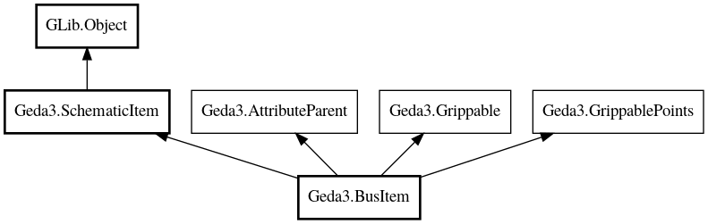

BusItem
Object Hierarchy:

Description:
Represents a bus on a schematic
Content:
Constants:
- public const unowned string TYPE_ID
The type code, for a bus, used in schematic files
- public const int WIDTH
The width to use for drawing busses
Properties:
Creation methods:
Methods:
- public void attach (AttributeChild attribute)
Attach an attribute to this item
- public override Bounds calculate_bounds (SchematicPainter painter, bool reveal)
Calculate the bounds of this schematic item
- public Collection<Grip> create_grips (GripAssistant assistant)
Create grips for this schematic item
- public void detach (AttributeChild attribute)
Detach an attribute from this item
- public void get_point (int index, out int x, out int y)
Change a point on the line
- public override void invalidate_on (Invalidatable invalidatable)
Draw this item using the given painter
- public override void draw (SchematicPainter painter, bool reveal, bool selected)
Draw this item using the given painter
- public override bool intersects_box (SchematicPainter painter, Bounds box)
Check if this item intersects a box
- public override void mirror_x (int cx)
Mirror the item and child attributes along the x axis
- public override void mirror_y (int cy)
Mirror the item and child attributes along the y axis
- public override void read_with_params (string[] @params, DataInputStream stream) throws IOError, ParseError
Read this item from the input stream
- public override void rotate (int cx, int cy, int angle)
Rotate this item and its child attributes
- public void set_point (int index, int x, int y)
Change a point on the line
- public override double shortest_distance (SchematicPainter painter, int x, int y)
Calculate the shortest distance from the point to the item
- public override void translate (int dx, int dy)
Translate this item and its child attributes
- public override void write (DataOutputStream stream) throws IOError
Write this item to the output stream
Fields:
- public int b_color
Backing store the color
- public int b_direction
Backing store for the direction
- public int[] b_x
Backing store the x coordinates
- public int[] b_y
Backing store the y coordinates
Inherited Members:
All known members inherited from class Geda3.SchematicItem
All known members inherited from class GLib.Object
- interface_find_property
- interface_install_property
- interface_list_properties
- @new
- new_valist
- newv
- new_with_properties
- add_toggle_ref
- add_weak_pointer
- bind_property
- connect
- constructed
- disconnect
- dispose
- dup_data
- dup_qdata
- force_floating
- freeze_notify
- @get
- get_class
- get_data
- get_property
- get_qdata
- get_type
- getv
- is_floating
- notify_property
- @ref
- ref_sink
- replace_data
- replace_qdata
- remove_toggle_ref
- remove_weak_pointer
- @set
- set_data
- set_data_full
- set_property
- set_qdata
- set_qdata_full
- set_valist
- setv
- steal_data
- steal_qdata
- thaw_notify
- unref
- watch_closure
- weak_ref
- weak_unref
- notify
- ref_count
All known members inherited from interface Geda3.AttributeParent
All known members inherited from interface Geda3.Grippable
All known members inherited from interface Geda3.GrippablePoints